Trang Giới thiệu
Họ & Tên
Nguyễn Đức Việt
Ngành Học
Ngôn ngữ Anh
Sở Thích
Dịch thuật, Phân tích dữ liệu ngôn ngữ, Khám phá AI.
🎯 Mục tiêu học tập & Định hướng
Là một sinh viên ngành Ngôn ngữ Anh, mình nhận thấy ngôn ngữ và công nghệ đang ngày càng giao thoa mạnh mẽ. Mục tiêu của mình là làm chủ các công cụ kỹ thuật số và Trí tuệ nhân tạo (AI) để tối ưu hóa công việc biên-phiên dịch, sáng tạo nội dung và nghiên cứu ngôn ngữ học trong tương lai.
🚀 Mục tiêu của Portfolio này
-
✓
Thể hiện kỹ năng số: Tổng hợp các kiến thức và kỹ năng đã học được từ môn "Nhập môn Công nghệ số và Ứng dụng AI".
-
✓
Lưu trữ hệ thống: Đóng vai trò như một kho lưu trữ trực tuyến các sản phẩm cá nhân để dễ dàng truy cập và chia sẻ với nhà tuyển dụng sau này.
-
✓
Theo dõi tiến trình: Nhìn lại sự tiến bộ của bản thân qua từng bài tập thực hành.
Bài 1: Thao tác cơ bản với tập tin & thư mục
1 Mở File Explorer
- Thao tác: Nhấn tổ hợp phím
Windows + Ehoặc nhấp vào biểu tượng thư mục màu vàng trên thanh tác vụ. - Truy cập ổ đĩa: Ở cột bên trái, nhấp vào
This PC, sau đó nhấp đúp vào một ổ đĩa không phải ổ hệ thống (ví dụ: ổ D: hoặc E:). Nếu chỉ có ổ C:, hãy vào thư mục Documents.
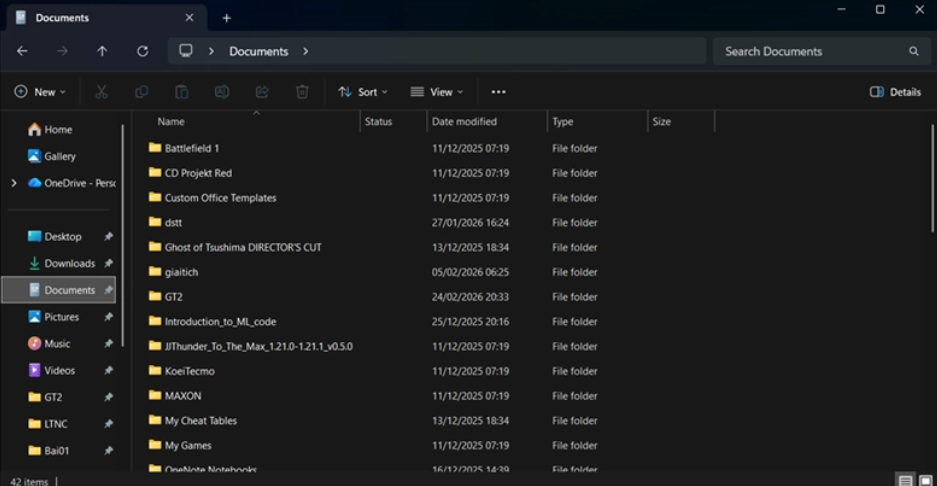
2 Tạo Thư mục & Tệp tin
- Tạo thư mục mới: Chuột phải ->
New->Folder. Đặt tên làThucHanh_NguyenDucViet. - Tạo tệp văn bản: Đặt tên là
GhiChu.txt, sau đó đổi tên thànhGhiChuQuanTrong.txt. - Tạo thư mục con: Đặt tên là
TaiLieutrong thư mục chính.
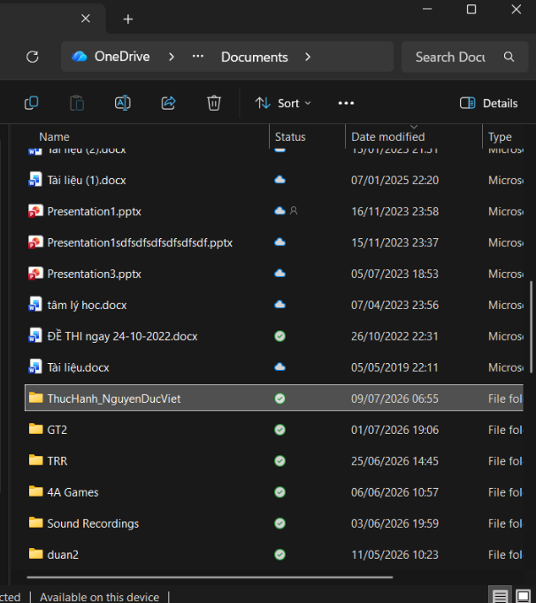
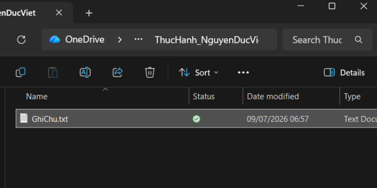
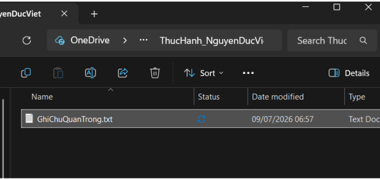
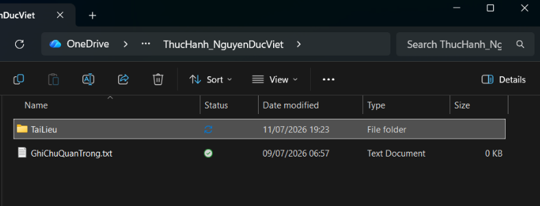
3 Sao chép & Di chuyển
- Copy & Paste: Sao chép tệp
GhiChuQuanTrong.txtvào thư mụcTaiLieu. - Cut & Paste: Tạo tệp
DiChuyen.txtand di chuyển hẳn nó vào thư mụcTaiLieu.
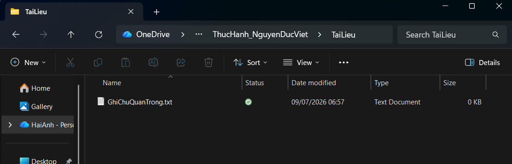
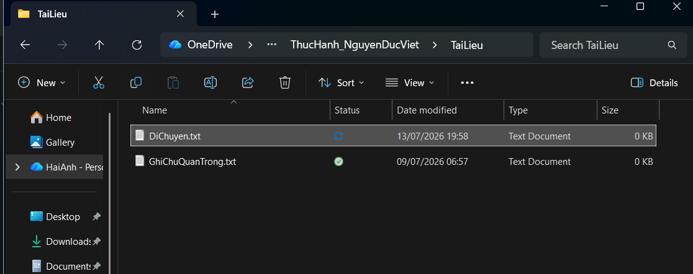
4 Xóa & Khôi phục
- Xóa vào Thùng rác: Xóa tệp
GhiChuQuanTrong.txttrong thư mụcTaiLieu. - Xóa vĩnh viễn: Chọn tệp
DiChuyen.txt, nhấn tổ hợp phímShift + Delete. - Khôi phục: Mở Recycle Bin trên Desktop and chọn khôi phục lại tệp
GhiChuQuanTrong.txt.
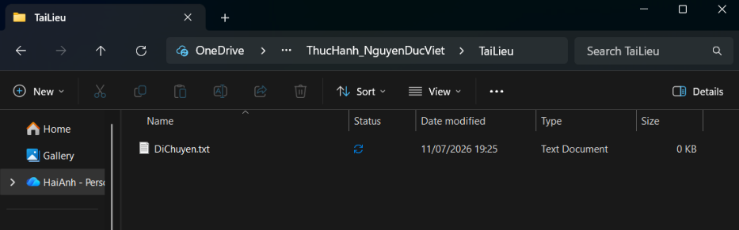
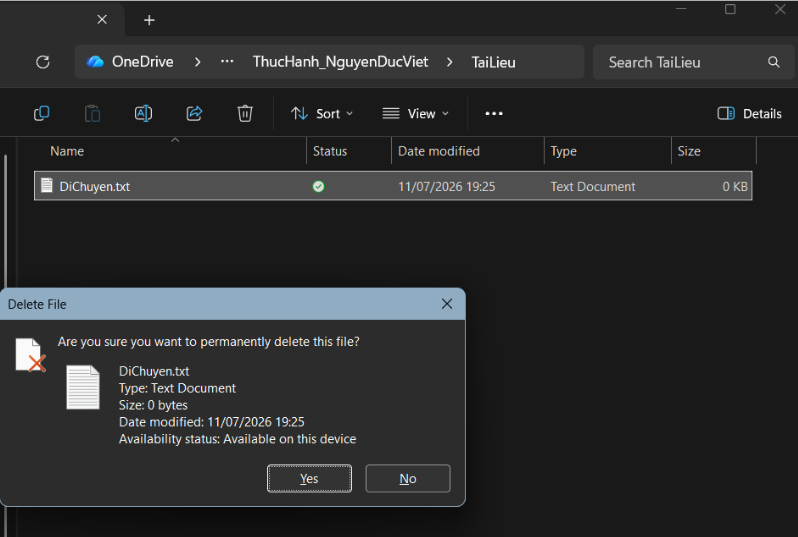
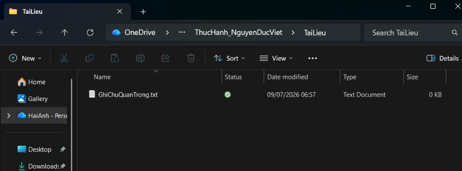
BÁO CÁO
ĐỀ TÀI: TÌM KIẾM VÀ ĐÁNH GIÁ NGUỒN THÔNG TIN HỌC THUẬT VỀ LARGE LANGUAGE MODELS (LLMS) TRONG XỬ LÝ NGÔN NGỮ TỰ NHIÊN
1. Giới thiệu
Sự phát triển của trí tuệ nhân tạo đã tạo ra nhiều bước tiến quan trọng trong lĩnh vực xử lý ngôn ngữ tự nhiên (Natural Language Processing - NLP). Trong số đó, Large Language Models (LLMs) như GPT, Llama hay Gemini đang trở thành nền tảng cho many ứng dụng như chatbot, dịch máy, tóm tắt văn bản và hỗ trợ lập trình. Do tốc độ phát triển rất nhanh của lĩnh vực này, việc lựa chọn các nguồn thông tin học thuật đáng tin cậy là rất quan trọng nhằm đảm bảo tính chính xác và cập nhật của kiến thức. Báo cáo này tiến hành tìm kiếm, tổng hợp và đánh giá các tài liệu học thuật liên quan đến LLMs từ nhiều nguồn khác nhau gồm: Google Scholar, Tạp chí khoa học, Sách chuyên khảo, Nguồn mở trên Internet.
2. Phạm vi tìm kiếm
Chủ đề: Large Language Models trong NLP.
Các survey hiện đại về LLM đều mô tả đây là một trong những hướng nghiên cứu phát triển nhanh nhất của AI hiện nay. (arXiv)
3. Bảng tổng hợp và đánh giá nguồn
| STT | Tài liệu | Loại nguồn | Tác giả | NXB/Cơ quan | Phương pháp | Trích dẫn | Cập nhật | Độ tin cậy |
|---|---|---|---|---|---|---|---|---|
| 1 | Attention Is All You Need (2017) | Bài báo | Vaswani et al. | NeurIPS | Thực nghiệm | Rất cao (>100.000) | 2017 | ★★★★★ |
| 2 | A Survey of Large Language Models | Survey Paper | Zhao et al. | Springer | Survey hệ thống | Rất cao | 2026 | ★★★★★ (Springer Link) |
| 3 | Large Language Models: A Survey | Survey | Minaee et al. | arXiv | Survey | Rất cao | 2024 | ★★★★★ (arXiv) |
| 4 | Recent Advances in NLP via Large PLMs | Survey | Min et al. | arXiv | Survey | Cao | 2021 | ★★★★★ (arXiv) |
| 5 | A Survey of Transformers | Survey | Lin et al. | arXiv | Survey | Cao | 2021 | ★★★★★ (arXiv) |
| 6 | Speech and Language Processing (Jurafsky & Martin) | Sách | Jurafsky, Martin | Pearson | Giáo trình | Rất cao | 2025 draft | ★★★★★ |
| 7 | Deep Learning | Sách | Goodfellow et al. | MIT Press | Giáo trình | Rất cao | 2016 | ★★★★★ |
| 8 | Dive into Deep Learning | Sách mở | Zhang et al. | D2L.ai | Giáo trình | Cao | 2024 | ★★★★☆ |
| 9 | Hugging Face Transformers Documentation | Nguồn mở | Hugging Face | Hugging Face | Tài liệu kỹ thuật | Rất cao | 2026 | ★★★★☆ |
| 10 | Google AI Blog - Transformer Models | Nguồn mở | Google Research | Bài viết kỹ thuật | Cao | 2025 | ★★★★☆ | |
| 11 | What Formal Languages Can Transformers Express? | Tạp chí | Strobl et al. | Transactions of ACL | Phân tích lý thuyết | Cao | 2024 | ★★★★★ (MIT Press Direct) |
4. Đánh giá các nguồn
📂 5. Xếp hạng độ tin cậy
| Mức | Tiêu chí | Nguồn |
|---|---|---|
| ★★★★★ | Peer-reviewed, nhiều trích dẫn, tác giả uy tín | NeurIPS, Springer, ACL, MIT Press, Pearson |
| ★★★★☆ | Nguồn mở chính thức, cộng đồng sử dụng rộng | Hugging Face, Google AI Blog, D2L |
| ★★★☆☆ | Blog kỹ thuật, bài phổ thông | Medium, Towards Data Science... (không làm nguồn chính) |
🏁 6. Kết luận
Các bài báo phản biện và giáo trình vẫn là nguồn thông tin đáng tin cậy nhất để nghiên cứu về Large Language Models. Việc kết hợp nhiều loại nguồn giúp đảm bảo cả tính học thuật, tính cập nhật và khả năng ứng dụng thực hành trong học tập cũng như nghiên cứu.
Danh mục tài liệu tham khảo (Harvard)
Goodfellow, I., Bengio, Y. & Courville, A. (2016) Deep Learning. MIT Press.
Jurafsky, D. & Martin, J.H. (2025) Speech and Language Processing. 3rd ed. Draft.
Lin, T. et al. (2021) A Survey of Transformers. arXiv:2106.04554. (arXiv)
Min, B. et al. (2021) Recent Advances in Natural Language Processing via Large Pre-trained Language Models: A Survey. arXiv:2111.01243. (arXiv)
Minaee, S. et al. (2024) Large Language Models: A Survey. arXiv:2402.06196. (arXiv)
Strobl, L. et al. (2024) What Formal Languages Can Transformers Express? Transactions of the Association for Computational Linguistics. (MIT Press Direct)
Vaswani, A. et al. (2017) Attention Is All You Need. NeurIPS.
Zhao, W.X. et al. (2026) A Survey of Large Language Models. Frontiers of Computer Science. (Springer Link)
Zhang, A. et al. (2024) Dive into Deep Learning. D2L.ai.
Hugging Face. (2026) Transformers Documentation.
Google Research. (2025) Google AI Blog: Transformer Models.
BÁO CÁO
THỰC HÀNH VIẾT PROMPT HIỆU QUẢ VỚI MÔ HÌNH NGÔN NGỮ LỚN (LLM)
I. Giới thiệu
Sự phát triển của các mô hình ngôn ngữ lớn (Large Language Models - LLM) như ChatGPT, Gemini hay Claude đã tạo ra nhiều thay đổi trong hoạt động học tập. Thay vì chỉ tìm kiếm thông tin trên Internet, sinh viên có thể sử dụng AI để tóm tắt tài liệu, giải thích các kiến thức khó hoặc hỗ trợ ôn tập trước kỳ thi.
Tuy nhiên, chất lượng câu trả lời của AI phụ thuộc rất lớn vào prompt (câu lệnh hướng dẫn). Một prompt ngắn và thiếu thông tin thường chỉ tạo ra kết quả ở mức chung chung, trong khi một prompt được thiết kế tốt có thể giúp AI hiểu rõ mục tiêu, đối tượng người đọc, định dạng mong muốn và đưa ra câu trả lời có chất lượng cao hơn.
Báo cáo này tiến hành thử nghiệm ba tác vụ học tập phổ biến với ba mức độ prompt nhau nhằm đánh giá ảnh hưởng của kỹ thuật Prompt Engineering đến chất lượng đầu ra của mô hình AI.
II. Phân tích các tác vụ học tập
1. Tác vụ 1: Tóm tắt một bài đọc học thuật
Mục tiêu: Giúp người học nhanh chóng nắm được nội dung chính của một tài liệu dài mà không cần đọc toàn bộ.
Yêu cầu: Giữ nguyên ý chính; Loại bỏ thông tin dư thừa; Trình bày logic; Không làm sai nội dung gốc.
Khó khăn: Nếu prompt không rõ ràng, AI thường tóm tắt quá ngắn, bỏ sót ý quan trọng, không phân biệt luận điểm chính và ví dụ minh họa. Do đó prompt cần quy định rõ độ dài, cấu trúc và mức độ chi tiết.
2. Tác vụ 2: Giải thích một khái niệm phức tạp
Mục tiêu: Giúp sinh viên hiểu một kiến thức mới theo cách dễ tiếp cận hơn.
Yêu cầu: Giải thích chính xác; Có ví dụ; Có phép so sánh (analogy); Tránh dùng quá nhiều thuật ngữ.
Khó khăn: Nếu prompt quá đơn giản, AI thường giải thích như sách giáo khoa, quá nhiều định nghĩa, thiếu ví dụ thực tế, người mới khó hiểu. Prompt tốt cần xác định rõ đối tượng người học và cách trình bày.
3. Tác vụ 3: Tạo bộ câu hỏi ôn tập
Chủ đề: English Tenses (12 thì trong tiếng Anh, tập trung vào các thì cơ bản)
Mục tiêu: Hỗ trợ sinh viên ngành Ngôn ngữ Anh ôn tập kiến thức về các thì trong tiếng Anh trước kỳ thi, kiểm tra khả năng ghi nhớ và vận dụng ngữ pháp.
Yêu cầu: Bao phủ toàn bộ các thì cơ bản; Có nhiều mức độ khó; Có đáp án; Có giải thích; Định dạng rõ ràng.
Khó khăn: Nếu prompt quá ngắn hoặc không quy định cụ thể, AI thường: Chỉ tạo các câu hỏi nhận biết đơn giản; Thiếu đáp án hoặc giải thích; Các câu hỏi dễ bị lặp; Không phân chia mức độ khó; Chưa đánh giá được khả năng vận dụng của người học.
III. Thiết kế Prompt
Tác vụ 1 – Tóm tắt bài đọc học thuật
Tác vụ 2 – Giải thích khái niệm phức tạp
Tác vụ 3 – Tạo bộ câu hỏi ôn tập
Nhận xét sau khi thiết kế Prompt: Sự khác biệt rõ rệt qua 3 cấp độ giúp tối ưu hóa đầu ra định hình rõ tư duy ôn tập hệ thống học thuật.
IV. Thử nghiệm Prompt
1. Tác vụ 1: Tóm tắt bài đọc học thuật
Dữ liệu thử nghiệm: Một bài báo khoa học về Artificial Intelligence in Education dài khoảng 2.500 từ.
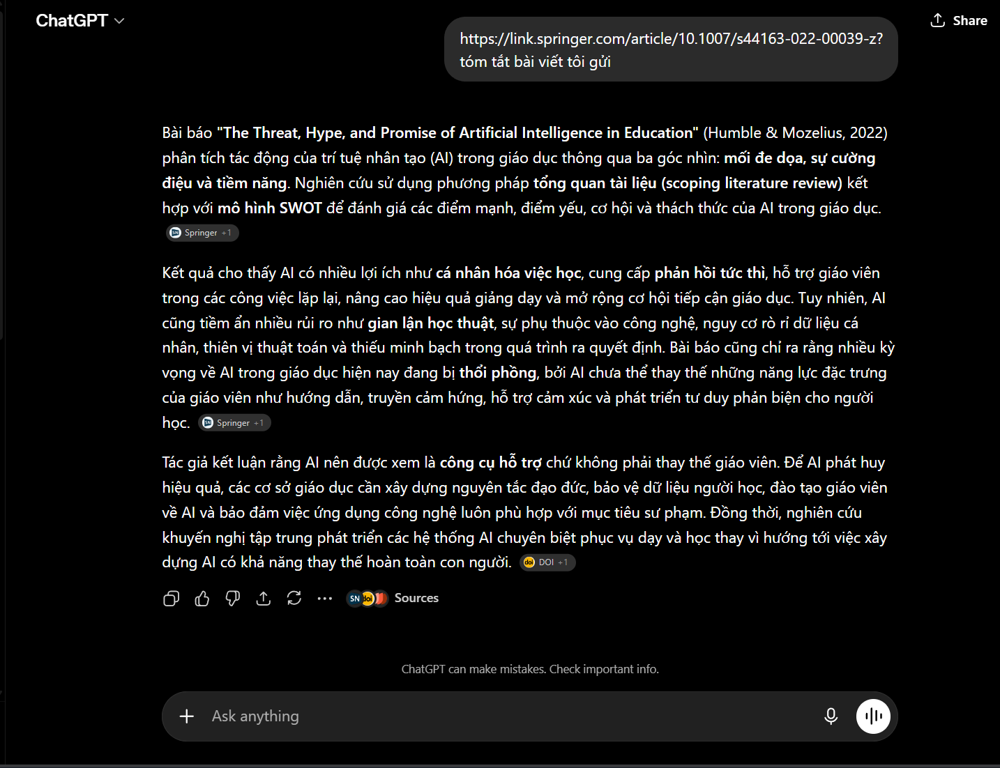
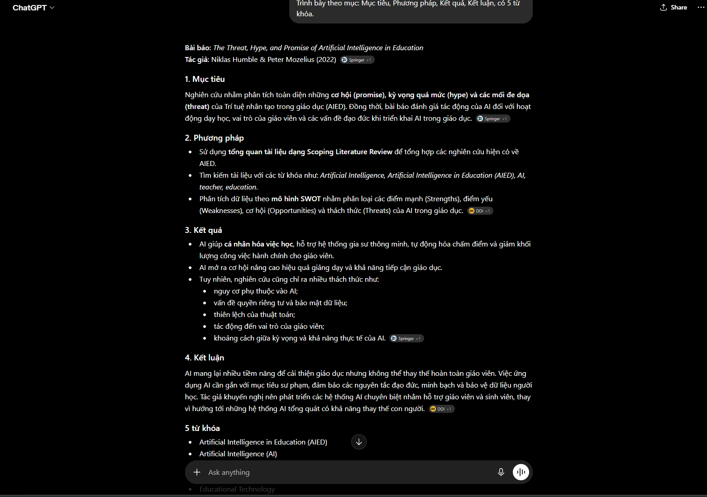
| Nội dung | Ý nghĩa |
|---|---|
| AI cá nhân hóa học tập | Tăng hiệu quả tiếp thu |
| Phản hồi tự động | Giảm tải cho giảng viên |
| Phân tích dữ liệu học tập | Hỗ trợ đánh giá sinh viên |
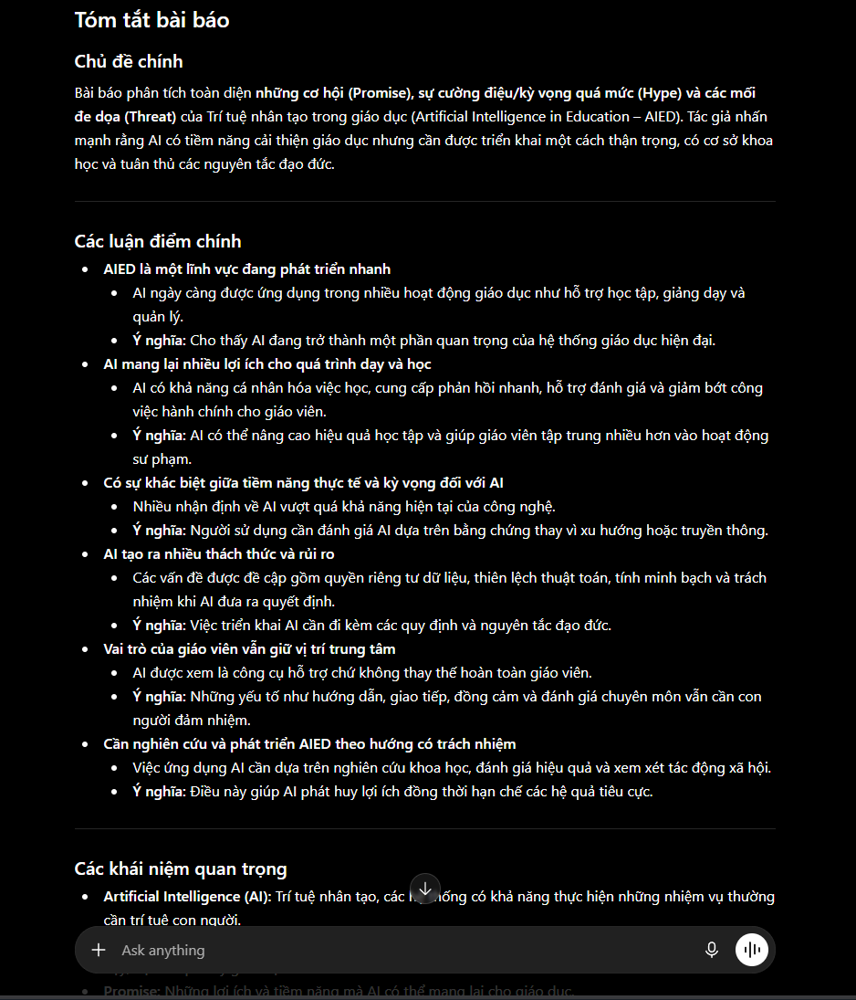
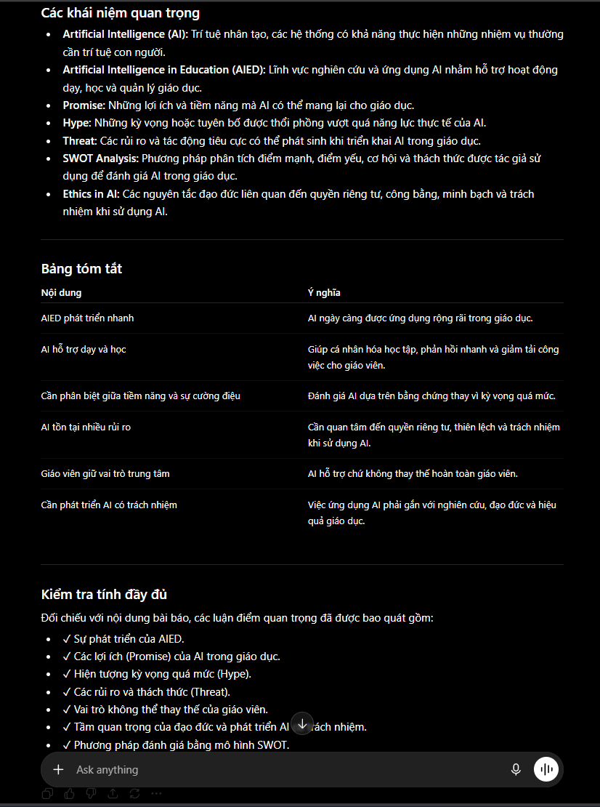
| Tiêu chí | Prompt cơ bản | Prompt cải tiến | Prompt nâng cao |
|---|---|---|---|
| Đầy đủ nội dung | ⭐ | ⭐⭐ | ⭐⭐⭐ |
| Có cấu trúc | ⭐ | ⭐⭐ | ⭐⭐⭐ |
| Dễ học | ⭐ | ⭐⭐ | ⭐⭐⭐ |
| Có từ khóa | ❌ | ✅ | ✅ |
| Có bảng tổng hợp | ❌ | ❌ | ✅ |
| Phù hợp ôn thi | Trung bình | Tốt | Rất tốt |
2. Tác vụ 2: Giải thích khái niệm phức tạp
Khái niệm thử nghiệm: Transformer trong Trí tuệ nhân tạo.
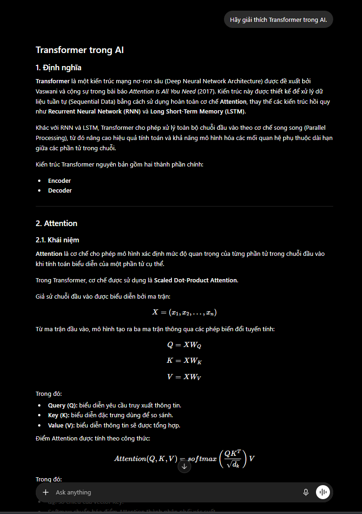
Input ↓ → Embedding → Attention → Feed Forward → Output
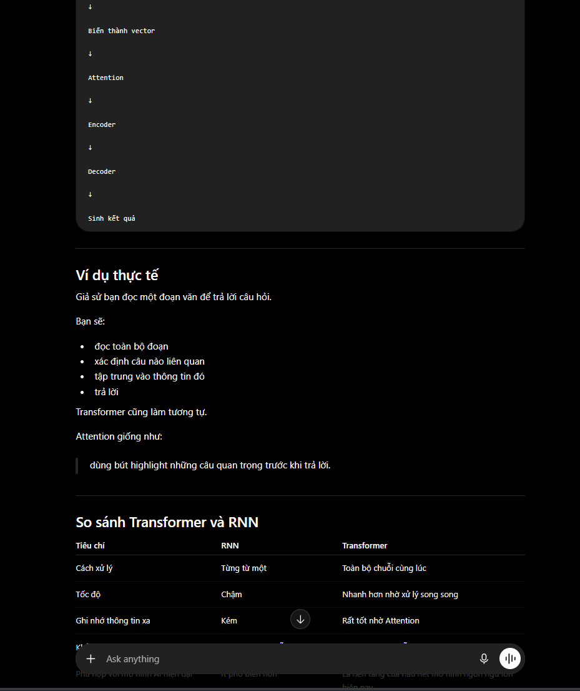
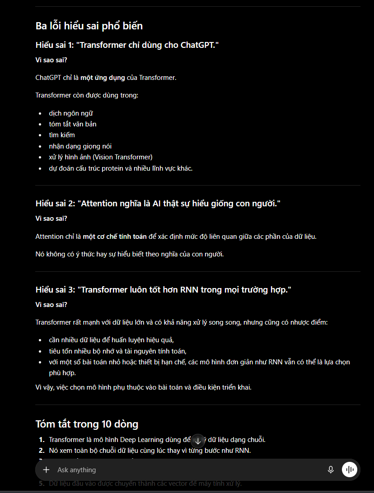
| Tiêu chí | Prompt cơ bản | Prompt cải tiến | Prompt nâng cao |
|---|---|---|---|
| Dễ hiểu | ⭐ | ⭐⭐ | ⭐⭐⭐ |
| Có ví dụ | ❌ | ✅ | ✅ |
| Có sơ đồ | ❌ | ✅ | ✅ |
| Có so sánh | ❌ | ✅ | ✅ |
| Có phân tích hiểu sai | ❌ | ❌ | ✅ |
| Phù hợp người mới | Trung bình | Tốt | Rất tốt |
3. Tác vụ 3: Tạo bộ câu hỏi ôn tập
Chủ đề: English Tenses (Các thì trong tiếng Anh)
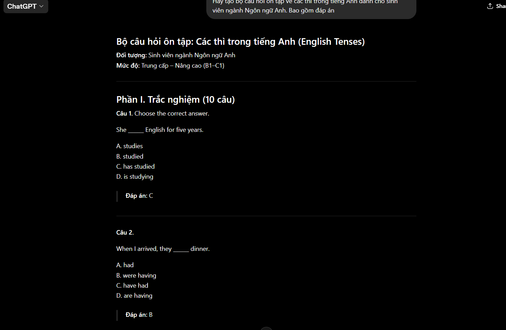
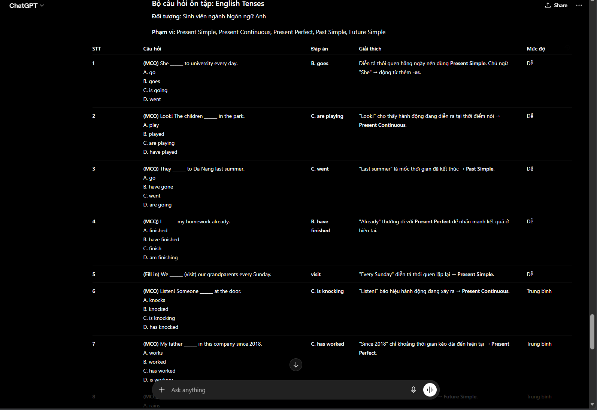
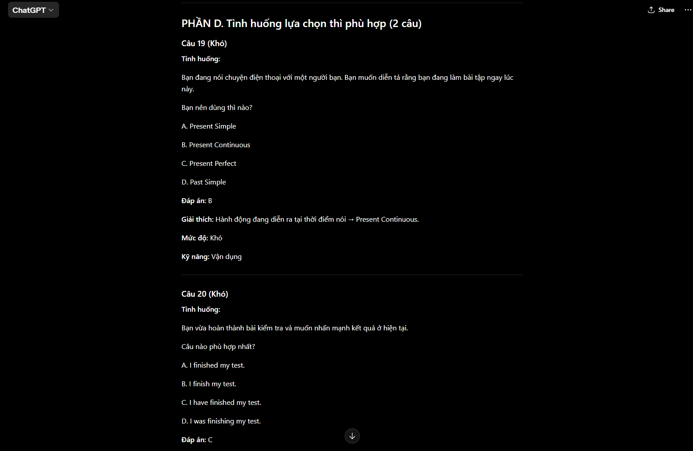
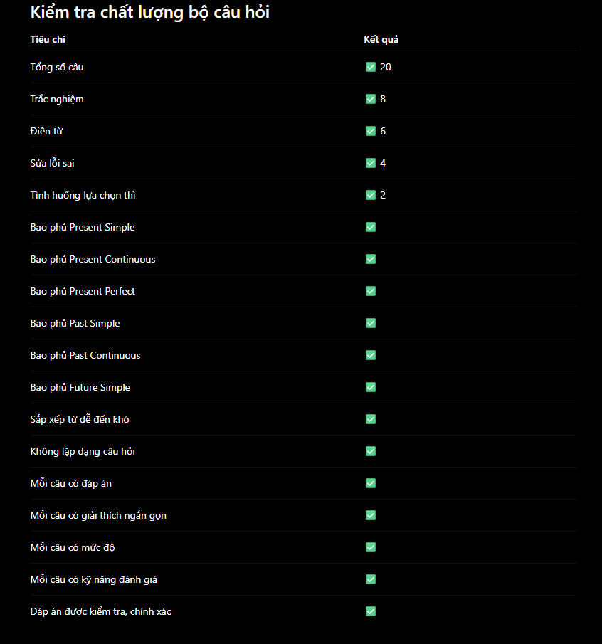
Bảng so sánh kết quả
| Tiêu chí | Prompt cơ bản | Prompt cải tiến | Prompt nâng cao |
|---|---|---|---|
| Độ chi tiết | ⭐ | ⭐⭐ | ⭐⭐⭐ |
| Số lượng câu hỏi | Không cố định | 15 | 20 |
| Bao phủ kiến thức | Một phần | Tương đối đầy đủ | Đầy đủ |
| Phân chia độ khó | ❌ | ✅ | ✅ |
| Nhiều dạng câu hỏi | ❌ | Một phần | ✅ |
| Có đáp án | ✅ | ✅ | ✅ |
| Có giải thích | ❌ | ✅ | ✅ |
| Đánh giá kỹ năng | ❌ | ❌ | ✅ |
| Khả năng dùng để ôn thi | Trung bình | Tốt | Rất tốt |
V. Phân tích hiệu quả của Prompt
Qua ba tác vụ có thể nhận thấy rằng chất lượng câu trả lời không phụ thuộc vào việc prompt dài hay ngắn, mà phụ thuộc vào mức độ rõ ràng và đầy đủ của thông tin mà prompt cung cấp. Đối với prompt cơ bản, AI phải tự đoán mục tiêu dẫn đến kết quả thiếu cấu trúc. Ở prompt cải tiến, việc bổ sung ràng buộc giúp nội dung ổn định hơn. Hiệu quả cao nhất thuộc về prompt nâng cao nhờ kết hợp Role Prompting, Structured Output, Constraint Prompting, Audience Prompting, Task Decomposition và Self-review giúp tăng độ chính xác, nhất quán tối ưu.
Role Prompting tạo sự khác biệt vượt bậc về sư phạm, giải thích có trình tự logic rõ nét. Định dạng Structured Output giúp thông tin hiển thị dạng bảng trực quan, cực kỳ dễ tra cứu nhanh khi sinh viên cần ôn tập.
VI. Tổng hợp các nguyên tắc và mẹo viết Prompt hiệu quả
VII. Bài học rút ra từ quá trình thử nghiệm
- Prompt càng rõ ràng thì kết quả càng sát với nhu cầu của người dùng.
- Prompt chứa đúng thông tin cần thiết sẽ mang lại hiệu quả cao hơn là prompt dài sáo rỗng.
- Việc quy định vai trò, đối tượng và định dạng giúp AI triệt tiêu sự mơ hồ, tăng tính nhất quán.
- Các kỹ thuật nâng cao luôn đem lại bộ dữ liệu tối ưu cho các tác vụ học thuật phức tạp.
VIII. Kết luận
Prompt Engineering đóng vai trò quan trọng then chốt trong việc khai thác hiệu quả các mô hình ngôn ngữ lớn như ChatGPT. Việc làm chủ kỹ năng thiết kế câu lệnh nâng cao giúp sinh viên nâng cao năng suất học tập, cải thiện chất lượng công việc một cách chuyên nghiệp và có trách nhiệm trong kỷ nguyên số.
IX. Tài liệu tham khảo
1. Artificial Intelligence: A Modern Approach.
2. OpenAI. Prompting Guide.
3. Google. Prompt Design Guidelines.
4. Microsoft. AI Prompt Engineering Documentation.
* Toàn bộ thử nghiệm thực hiện trên ChatGPT (GPT-5.5) trong tháng 7/2026.
BÁO CÁO CÁ NHÂN
NĂNG LỰC QUẢN LÝ, ĐIỀU PHỐI VÀ HỢP TÁC TRỰC TUYẾN TRONG DỰ ÁN NHÓM "AI PRESENTATION"
I. GIỚI THIỆU CHUNG VỀ BỐI CẢNH DỰ ÁN VÀ VAI TRÒ CÁ NHÂN
Dự án "AI Presentation" được triển khai nhằm mục đích nghiên cứu sâu về các công cụ thiết kế, tối ưu hóa nội dung thuyết trình bằng Trí tuệ Nhân tạo (như Gamma AI, Tome, ChatGPT, và Midjourney) nhằm ứng dụng vào việc nâng cao hiệu suất làm việc của doanh nghiệp. Dự án được thực hiện bởi nhóm gồm 4 thành viên trong thời gian 1 tuần.
Với vai trò là Trưởng nhóm Nội dung & Điều phối Kỹ thuật, trách nhiệm cá nhân của tôi bao gồm:
- Thiết lập cấu trúc hệ thống quản trị, lưu trữ và giao tiếp chung cho toàn đội.
- Lập kế hoạch chi tiết, phân rã các tác vụ (tasks), áp đặt thời hạn (deadline) rõ ràng cho bản thân và giám sát tiến độ tổng thể.
- Chịu trách nhiệm chính trong việc biên soạn chương nội dung cốt lõi: "Phân tích các thuật toán Generative AI tối ưu hóa bố cục slide trực quan".
- Tổ chức, phân loại dữ liệu, đảm bảo tài nguyên số của dự án được lưu trữ một cách hệ thống, bảo mật và chuẩn hóa.
II. KỸ NĂNG THIẾT LẬP VÀ TỐI ƯU HÓA CÁC CÔNG CỤ HỢP TÁC TRỰC TUYẾN
Để đạt hiệu quả tối ưu cho luồng công việc không đồng bộ (asynchronous workflow), tôi đã chủ động tham gia thiết lập và cấu hình hệ thống bao gồm 4 công cụ trực tuyến thuộc 4 nhóm chức năng khác nhau, đạt trạng thái tối ưu hóa không gian làm việc số:
[MINH CHỨNG 1: ẢNH CHỤP MÀN HÌNH HỒ SƠ TÀI KHOẢN CÁ NHÂN]
III. QUẢN LÝ TÁC VỤ VÀ TƯƠNG TÁC CÁ NHÂN (NHẬT KÝ HOẠT ĐỘNG 1 TUẦN)
1. Quản lý tác vụ trên Trello
Toàn bộ 100% nhiệm vụ cá nhân do tôi phụ trách đều được thiết lập chi tiết trên Trello bao gồm: Mô tả chi tiết (Description), Tiêu chí nghiệm thu (Checklist), Người thực hiện (Member) và Thời hạn cụ thể (Due date). Tôi thực hiện cập nhật tiến độ công việc trên Trello với tần suất ít nhất 3 lần/tuần nhằm đảm bảo biểu đồ tiến độ dự án luôn chính xác.
| Mã Tác Vụ | Tên Nhiệm Vụ Cá Nhân | Mô Tả Chi Tiết Nhiệm Vụ | Thời Hạn (Due Date) | Trạng Thái Cuối Tuần |
|---|---|---|---|---|
| TSK-01 | Thiết lập không gian số | Khởi tạo Trello Board, Slack Workspace, Google Drive, phân quyền thành viên | 06/07/2026 | Đã hoàn thành (Done) |
| TSK-02 | Nghiên cứu tài liệu tổng quan | Tổng hợp 05 bài báo khoa học về Generative AI trong thiết kế Presentation | 08/07/2026 | Đã hoàn thành (Done) |
| TSK-03 | Biên soạn Nội dung Chương 2 | Viết chi tiết phần "Thuật toán Generative AI tối ưu hóa bố cục slide" | 10/07/2026 | Đã hoàn thành (Done) |
| TSK-04 | Tổng hợp & Rà soát | Rà soát lỗi chính tả, định dạng và kiểm tra trùng lặp (Plagiarism Check) | 12/07/2026 | Đã hoàn thành (Done) |
[MINH CHỨNG 3: ẢNH CHỤP CHI TIẾT THỂ CÔNG VIỆC (CARD DETAIL) TRÊN TRELLO]
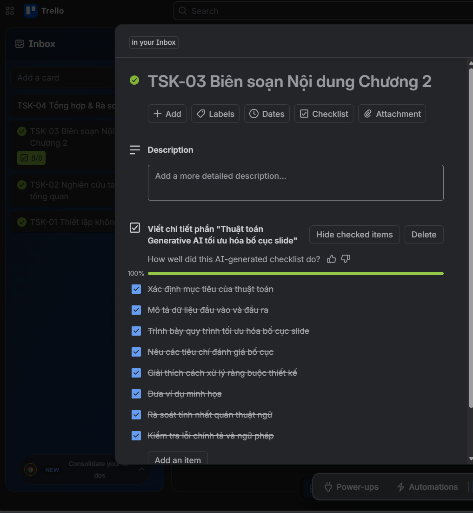
2. Lịch sử đóng góp nội dung trực tiếp trên Google Docs
Trong quá trình biên soạn nội dung cho tài liệu "Báo cáo Nghiên cứu Ứng dụng AI trong Thuyết trình", tôi đã đóng góp trực tiếp hơn 1.500 từ vào chương 2. Việc soạn thảo được thực hiện nghiêm túc thông qua hai chế độ: Chỉnh sửa trực tiếp (Editing mode) đối với phần việc cá nhân và Chế độ gợi ý (Suggestion mode) kèm theo Nhận xét (Comments) khi hiệu đính phần việc của các thành viên khác.
[MINH CHỨNG 4: ẢNH CHỤP LỊCH SỬ PHIÊN BẢN (VERSION HISTORY) TRÊN GOOGLE DOCS]
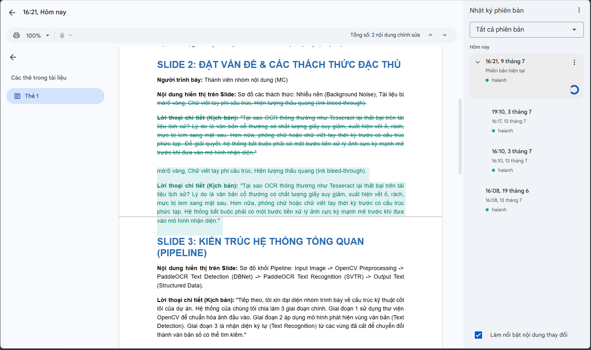
[MINH CHỨNG 5: ẢNH CHỤP TÍNH NĂNG NHẬN XÉT VÀ GỢI Ý (SUGGESTION & COMMENT)]
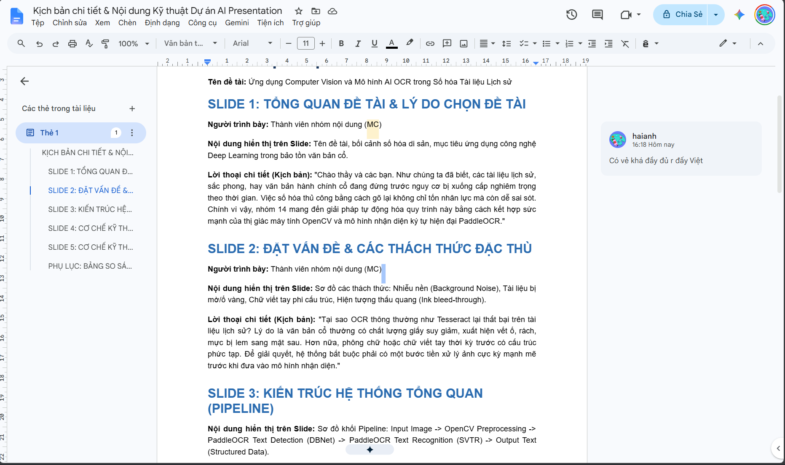
3. Tương tác và thảo luận chủ động trên Slack
Để duy trì mạch làm việc hiệu quả, tôi duy trì tần suất tương tác cực kỳ cao, trên 10 lượt tương tác/tuần trên Slack. Nội dung tương tác không chỉ dừng lại ở báo cáo tiến độ cá nhân mà còn chủ động giải đáp thắc mắc, chia sẻ tài liệu và hỗ trợ gỡ rối kỹ thuật cho các thành viên khác khi họ gặp lỗi sử dụng công cụ Gamma AI.
[MINH CHỨNG 6: ẢNH CHỤP LUỒNG THẢO LUẬN (THREAD) TRÊN SLACK]
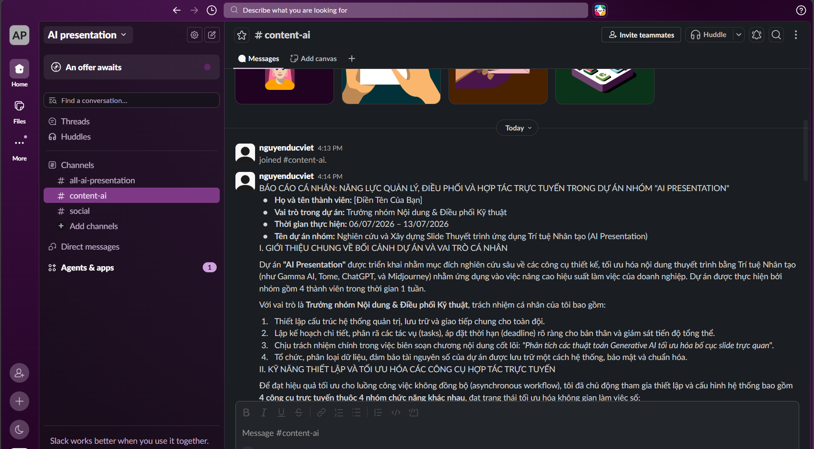
IV. PHAN TÍCH CHUYÊN SÂU: 3 THÁCH THỨC VÀ 3 GIẢI PHÁP TRONG QUÁ TRÌNH TƯƠNG TÁC NHÓM
Bối cảnh & Phân tích: Do các thành viên có lịch học và giờ sinh hoạt cá nhân khác nhau, việc nhắn tin tự do trên Slack ban đầu gây ra hiện tượng trôi tin nhắn quan trọng. Khi một thành viên đưa ra câu hỏi về dữ liệu vào buổi sáng, các thành viên khác đến tối mới trả lời, dẫn đến việc các câu hỏi bị phân tán, đẩy luồng hội thoại đi quá xa khiến thông tin chốt hạ bị bỏ lỡ, gây chậm tiến độ biên soạn văn bản.
Giải pháp xử lý: Tôi đã thiết lập một bộ quy tắc giao tiếp nghiêm ngặt trên Slack: Quy tắc Threading (100% các phản hồi cho một chủ đề bắt buộc phải viết trong "Reply in thread", nghiêm cấm nhắn trực tiếp ra kênh chung để tránh loãng). Tích hợp Google Drive Bot vào Slack: Cấu hình để mỗi khi có bất kỳ ai để lại nhận xét (comment) trên Google Docs, bot sẽ lập tức bắn thông báo về kênh #content-ai trên Slack kèm đường link trực tiếp. Giải pháp này giúp tăng tốc độ phản hồi nhận xét từ 12 tiếng giảm xuống dưới 1 tiếng.
Bối cảnh & Phân tích: Tại thời điểm giữa tuần (giai đoạn cao điểm viết báo cáo), khi tôi và hai thành viên khác cùng truy cập vào Google Docs để chỉnh sửa, do không phân định ranh giới rõ ràng, chúng tôi đã vô tình viết đè lên ý tưởng của nhau, thậm chí xóa mất các phần định nghĩa thuật toán mà người khác vừa tối ưu. Hệ quả là làm xáo trộn cấu trúc Heading của tài liệu và gây tâm lý hoang mang.
Giải pháp xử lý: Tôi lập tức điều phối lại quy trình soạn thảo bằng công nghệ: Khóa vùng trách nhiệm bằng tính năng Gợi ý: Yêu cầu toàn bộ thành viên chuyển hoàn toàn sang chế độ "Suggesting Mode" khi chạm vào các chương không do mình phụ trách trực tiếp. Áp dụng cấu trúc phân rã thẻ việc: Trên bảng Trello, tôi chia nhỏ Task biên soạn thành các sub-task cực nhỏ ứng với từng đề mục của Google Docs. Chỉ khi thẻ việc trên Trello chuyển sang "Done", người khác mới được quyền vào đọc và tối ưu hóa bằng chế độ nhận xét.
Bối cảnh & Phân tích: Một số thành viên trong nhóm chưa có thói quen chủ động mở Trello hàng ngày để kiểm tra công việc. Dẫn đến tình trạng mặc dù công việc đã sắp đến ngày Due date (Hạn định), họ vẫn chưa chuyển trạng thái thẻ từ "To Do" sang "In Progress", khiến tôi không thể đánh giá chính xác rủi ro chậm tiến độ tổng thể của toàn dự án để kịp thời can thiệp.
Giải pháp xử lý: Tôi tận dụng tối đa sức mạnh tự động hóa của hệ thống: Cấu hình Butler Automation cảnh báo sớm: Tôi thiết lập lệnh tự động trên Trello: "Khi một thẻ việc còn 24 tiếng là đến hạn, tự động gửi một thông báo nhắc nhở trực tiếp (Mention) tên thành viên đó kèm nhãn màu Đỏ (Khẩn cấp)". Thiết lập Daily Check-in siêu ngắn (5 phút): Cứ vào lúc 21h00 mỗi tối, tôi khởi tạo một cuộc gọi nhanh (Slack Huddle). Tại đây, không ai phải giải trình dài dòng, mỗi người chỉ cần thực hiện thao tác chia sẻ màn hình và kéo thả thẻ việc của mình trên Trello đúng với thực tế. Việc này tạo ra một áp lực đồng lứa tích cực (peer pressure), giúp 100% công việc dứt điểm đúng thời hạn vào cuối tuần.
V. ĐÁNH GIẢ HIỆU QUẢ CỦA CÔNG CỤ VÀ KẾT LUẬN
1. Đánh giá ưu điểm và nhược điểm của hệ thống công cụ đối với công việc cá nhân
2. Kết luận
Trải nghiệm một tuần điều phối dự án AI Presentation bằng các công cụ hợp tác trực tuyến giúp nâng cao vượt bậc năng lực quản trị dự án, tư duy tổ chức dữ liệu khoa học và kỹ năng giải quyết xung đột khi làm việc trong môi trường số.
[MINH CHỨNG 9: ẢNH CHỤP BIỂU ĐỒ HOÀN THÀNH HOẶC LỊCH SỬ HOẠT ĐỘNG TỔNG KẾT]
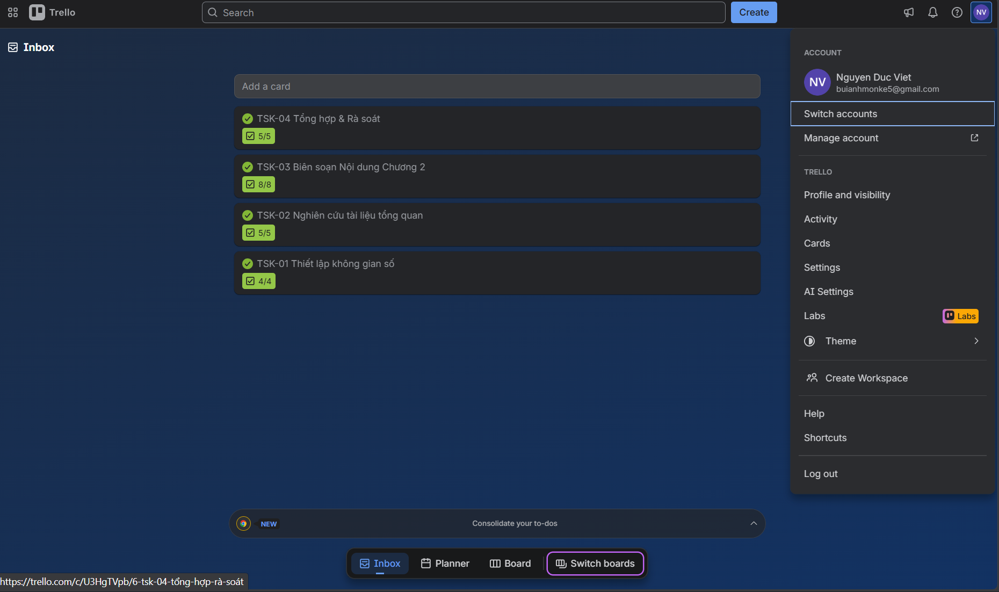
BÁO CÁO
ỨNG DỤNG CÁC CÔNG CỤ AI TẠO SINH TRONG QUÁ TRÌNH SÁNG TẠO NỘI DUNG SỐ
1. Giới thiệu dự án
1.1. Lý do lựa chọn dự án
Trong thời đại chuyển đổi số, các công cụ AI tạo sinh đã trở thành trợ lý đắc lực trong học tập và sáng tạo nội dung. Thay vì chỉ hỗ trợ tìm kiếm thông tin, AI còn có khả năng tạo văn bản, hình ảnh, thiết kế đồ họa và hỗ trợ xây dựng sản phẩm truyền thông trong thời gian rất ngắn. Đối với bài tập này, tôi lựa chọn thực hiện dự án thiết kế một infographic với chủ đề "Sử dụng AI có trách nhiệm trong học tập và nghiên cứu". Đây là một chủ đề phù hợp với môi trường đại học, đồng thời cho phép khai thác đầy đủ ba nhóm công cụ AI tạo sinh theo yêu cầu của đề bài.
1.2. Mục tiêu dự án
- Thiết kế một infographic trực quan, dễ hiểu.
- Truyền tải kiến thức về việc sử dụng AI đúng cách.
- Kết hợp hiệu quả giữa AI và khả năng sáng tạo của bản thân.
- Đánh giá ưu điểm và hạn chế của các công cụ AI.
1.3. Công cụ sử dụng
2. Quá trình sử dụng AI
2.1. Sử dụng ChatGPT
Mục tiêu: Xây dựng nội dung cho infographic.
💬 Prompt 1
"Hãy xây dựng dàn ý cho một infographic về chủ đề 'Sử dụng AI có trách nhiệm trong học tập' dành cho sinh viên đại học."
🤖 Kết quả: ChatGPT đề xuất cấu trúc gồm: AI là gì, Lợi ích, Rủi ro, Nguyên tắc sử dụng, Kết luận.
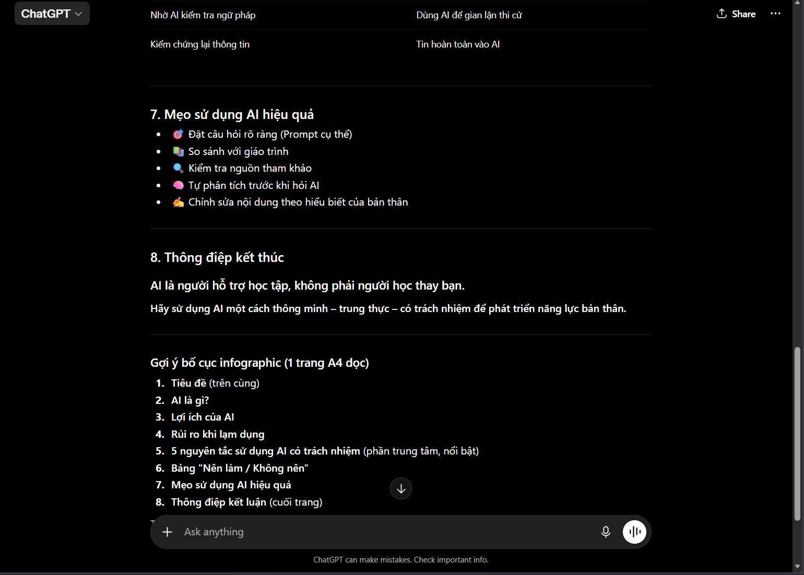
💬 Prompt 2
"Viết nội dung cho từng mục, mỗi mục khoảng 40 từ, ngắn gọn và phù hợp để đưa vào infographic."
🤖 Kết quả: ChatGPT tạo các đoạn nội dung súc tích, dễ đọc và phù hợp với bố cục infographic.
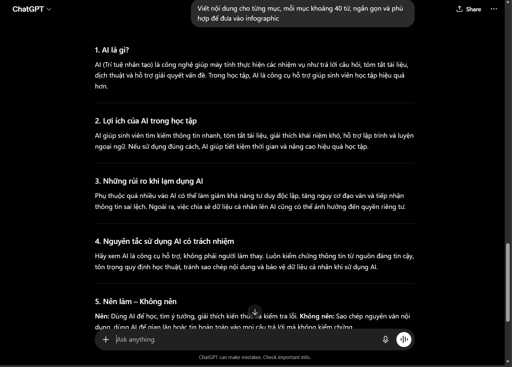
2.2. Sử dụng DALL·E
Mục tiêu: Tạo hình minh họa cho infographic.
💬 Prompt
"Create a clean flat-style illustration of a university student using artificial intelligence for studying, laptop, chatbot interface, books, graduation cap, blue and white color palette, modern infographic style."
🤖 Kết quả: DALL·E tạo hình ảnh gồm: sinh viên; máy tính; chatbot AI; sách; biểu tượng đám mây dữ liệu; màu sắc hiện đại.
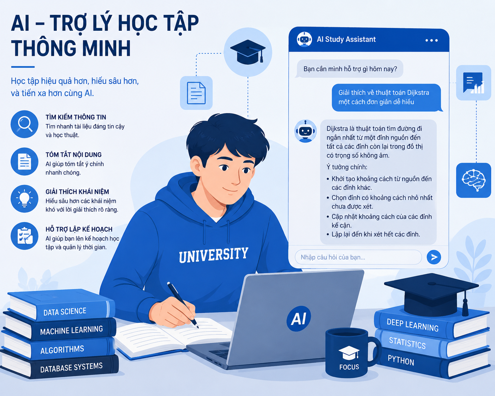
2.3. Sử dụng Canva AI
Mục tiêu: Thiết kế infographic hoàn chỉnh.
💬 Prompt
"Modern education infographic about responsible AI use, blue theme, minimalist design."
🤖 Kết quả: Canva AI đề xuất: bố cục dọc; bảng màu xanh; icon giáo dục; font chữ hiện đại; các khối nội dung.
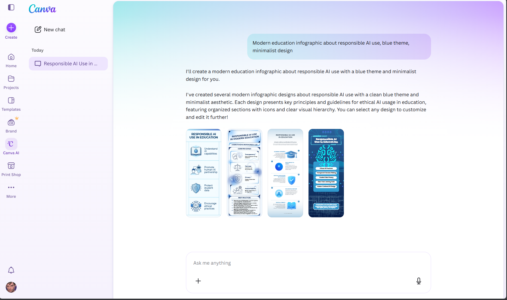
2.4. Hoàn thiện sản phẩm
Sau khi kết hợp đầu ra từ ba công cụ AI, tôi tiếp tục: loại bỏ nội dung trùng lặp; thêm ví dụ thực tế; thống nhất màu sắc; điều chỉnh bố cục; kiểm tra lỗi chính tả; rà soát tính chính xác của nội dung.
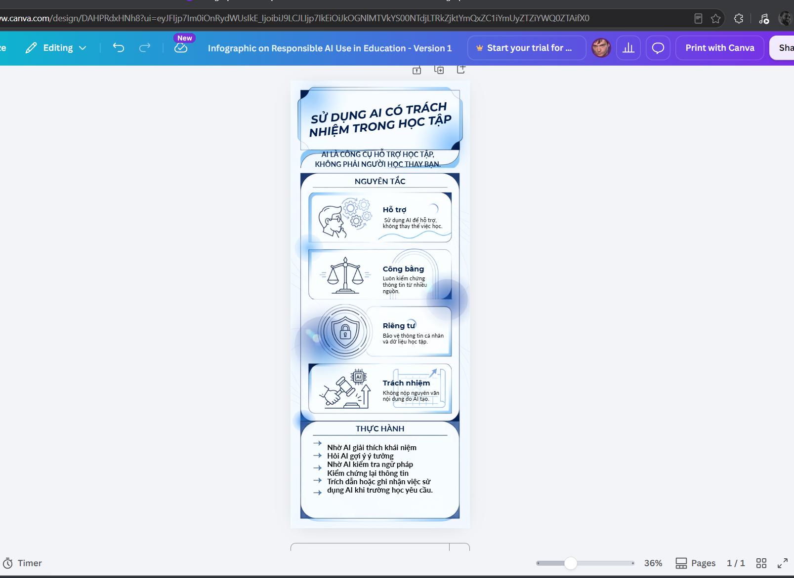
3. So sánh các công cụ AI
Ba công cụ AI được sử dụng trong dự án có vai trò khác nhau và bổ sung lẫn nhau.
Nếu đánh giá theo từng tiêu chí, ChatGPT là công cụ mạnh nhất về nội dung, DALL·E mạnh nhất về hình minh họa, còn Canva AI hiệu quả nhất trong khâu hoàn thiện sản phẩm. Việc kết hợp cả ba công cụ giúp quy trình sáng tạo diễn ra nhanh hơn, đồng thời vẫn đảm bảo người thực hiện giữ vai trò quyết định đối với chất lượng cuối cùng.
4. Vai trò của AI trong quá trình sáng tạo
AI đã thay đổi đáng kể cách tôi thực hiện một dự án sáng tạo nội dung. Trước đây, quy trình thường bắt đầu bằng việc tìm kiếm tài liệu từ nhiều nguồn, xây dựng dàn ý, viết nội dung, tìm hình minh họa và cuối cùng mới thiết kế sản phẩm. Mỗi bước đều tốn khá nhiều thời gian.
Khi sử dụng AI tạo sinh, quá trình làm việc trở nên hiệu quả hơn. ChatGPT giúp tôi nhanh chóng hình thành ý tưởng và cấu trúc nội dung. DALL·E tạo hình minh họa đúng chủ đề mà không cần tìm kiếm trên Internet. Canva AI hỗ trợ xây dựng bố cục chuyên nghiệp chỉ trong vài phút. Nhờ đó, tôi có thêm thời gian để tập trung vào việc đánh giá, chỉnh sửa và hoàn thiện sản phẩm thay vì dành phần lớn thời gian cho các công việc lặp lại.
Tuy nhiên, AI vẫn chưa thể thay thế hoàn toàn con người. Nội dung do AI tạo đôi khi thiếu chiều sâu hoặc chưa phù hợp với đối tượng người đọc. Hình ảnh cũng có thể chưa đúng như mong muốn. Vì vậy, tư duy phản biện và khả năng sáng tạo của người sử dụng vẫn là yếu tố quyết định chất lượng sản phẩm.
Bên cạnh đó, việc sử dụng AI đặt ra nhiều vấn đề đạo đức. Người học cần minh bạch về việc sử dụng AI, không sao chép nguyên văn đầu ra, tôn trọng quyền sở hữu trí tuệ và kiểm chứng thông tin trước khi sử dụng. Nếu phụ thuộc quá mức vào AI, sinh viên có thể giảm khả năng tư duy độc lập, kỹ năng viết và khả năng giải quyết vấn đề. Do đó, AI nên được xem là một cộng sự hỗ trợ chứ không phải là công cụ thay thế hoàn toàn con người.
5. Đóng góp sáng tạo của bản thân
Ngoài việc sử dụng AI, tôi đã trực tiếp thực hiện nhiều công việc quan trọng:
🏁 6. Kết luận
Qua dự án này, tôi nhận thấy AI tạo sinh là một công cụ hỗ trợ rất mạnh trong quá trình sáng tạo nội dung số. Việc kết hợp ChatGPT, DALL·E và Canva AI giúp tiết kiệm thời gian, nâng cao chất lượng sản phẩm và mở rộng khả năng sáng tạo. Tuy nhiên, AI chỉ phát huy hiệu quả khi người sử dụng biết cách đặt prompt phù hợp, đánh giá kết quả một cách phản biện và chủ động chỉnh sửa để tạo ra sản phẩm mang dấu ấn cá nhân. Trong tương lai, kỹ năng sử dụng AI một cách có trách nhiệm sẽ trở thành một năng lực quan trọng đối với sinh viên và người lao động trong nhiều lĩnh vực.
BÁO CÁO
Sử dụng AI có trách nhiệm trong học tập và nghiên cứu
1. Nghiên cứu chính sách về sử dụng AI trong học tập và nghiên cứu
Ví dụ chọn Đại học Quốc gia Hà Nội (VNU) (hoặc UET nếu giảng viên yêu cầu theo trường).
1.1. Tổng quan
Trong bối cảnh AI phát triển mạnh, nhiều trường đại học đã ban hành hướng dẫn về việc sử dụng các công cụ AI như ChatGPT, Gemini, Claude, Copilot... Quan điểm chung: AI được phép sử dụng như công cụ hỗ trợ học tập; Sinh viên vẫn phải chịu trách nhiệm về nội dung cuối cùng; Không được dùng AI để gian lận hoặc thay thế hoàn toàn tư duy cá nhân; Cần minh bạch khi AI tham gia tạo nội dung.
1.2. Những nguyên tắc chính
- Không nộp nguyên văn nội dung do AI tạo.
- Kiểm chứng tính chính xác của mọi thông tin.
- Không làm giả dữ liệu nghiên cứu bằng AI.
- Không sử dụng AI trong các bài kiểm tra nếu không được cho phép.
- Khi AI hỗ trợ đáng kể, cần ghi rõ trong báo cáo.
1.3. Nhận xét
Các chính sách không cấm AI mà hướng tới việc: tăng hiệu quả học tập; phát triển tư duy phản biện; bảo đảm tính trung thực học thuật.
2. Thực hiện một nhiệm vụ học tập với AI
Ví dụ chọn: Chuẩn bị bài thuyết trình về Trí tuệ nhân tạo trong giáo dục
Bước 1. Prompt sử dụng
💬 Prompt 1: "Hãy lập dàn ý cho bài thuyết trình 10 phút về ứng dụng AI trong giáo dục."
🤖 Đầu ra của AI: Giới thiệu, Khái niệm AI, Ứng dụng trong học tập, Lợi ích, Thách thức, Kết luận.
💬 Prompt 2: "Hãy liệt kê 5 lợi ích và 5 hạn chế của AI trong giáo dục."
🤖 Đầu ra: Lợi ích (Cá nhân hóa việc học, Tiết kiệm thời gian, Hỗ trợ nghiên cứu, Tăng khả năng tiếp cận kiến thức, Hỗ trợ học ngoại ngữ) | Hạn chế (Thông tin sai lệch, Phụ thuộc vào AI, Gian lận học thuật, Vấn đề bản quyền, Thiếu tư duy phản biện).
💬 Prompt 3: "Hãy đề xuất bố cục slide PowerPoint phù hợp."
🤖 Đầu ra: Slide 1: Tiêu đề | Slide 2: Giới thiệu | Slide 3: AI là gì | Slide 4: Ứng dụng | Slide 5: Lợi ích | Slide 6: Hạn chế | Slide 7: Kết luận
Đánh giá đầu ra của AI
Sau khi nhận được kết quả, tôi tiến hành: Kiểm tra lại thông tin từ các nguồn đáng tin cậy; Bổ sung ví dụ thực tế tại Việt Nam; Loại bỏ các nội dung trùng lặp; Chỉnh sửa cách diễn đạt để phù hợp với phong cách trình bày của bản thân; Thiết kế lại slide và thêm hình minh họa.
Do đó, AI chỉ đóng vai trò hỗ trợ trong việc gợi ý ý tưởng và xây dựng cấu trúc ban đầu.
Minh bạch việc sử dụng AI
"Báo cáo này có sử dụng ChatGPT để hỗ trợ xây dựng dàn ý, đề xuất cấu trúc trình bày và gợi ý nội dung. Toàn bộ thông tin đã được người thực hiện kiểm chứng, chỉnh sửa và chịu trách nhiệm về nội dung cuối cùng."
3. Phân tích các vấn đề đạo đức
3.1. Ranh giới giữa hỗ trợ hợp lý và gian lận học thuật
AI nên được xem là "trợ lý học tập", không phải "người làm bài thay".
3.2. Quyền sở hữu trí tuệ và trích dẫn
Các nội dung do AI tạo có thể: chứa thông tin sai; vô tình giống nguồn khác; không có tài liệu tham khảo rõ ràng. Vì vậy người sử dụng cần: kiểm chứng nguồn; trích dẫn tài liệu gốc khi sử dụng; ghi rõ việc có sử dụng AI. Điều này giúp đảm bảo tính minh bạch và tôn trọng quyền sở hữu trí tuệ.
3.3. Tác động đến quá trình học tập
Do đó, người học cần cân bằng giữa việc tận dụng AI và tự học.
4. Bộ nguyên tắc cá nhân
5. Nội dung infographic
Kết luận
AI mang lại nhiều lợi ích trong học tập và nghiên cứu nếu được sử dụng đúng cách. Tuy nhiên, người học cần duy trì tính trung thực học thuật, kiểm chứng thông tin, tôn trọng quyền sở hữu trí tuệ và luôn coi AI là công cụ hỗ trợ chứ không thay thế năng lực của bản thân. Việc xây dựng các nguyên tắc sử dụng AI có trách nhiệm sẽ giúp phát huy tối đa lợi ích của công nghệ đồng thời hạn chế các rủi ro về đạo đức và học thuật.
PHẦN CUỐI
TỔNG KẾT & NHÌN LẠI TIẾN TRÌNH DỰ ÁN
1. Trải nghiệm và cảm nhận cá nhân
Hành trình xây dựng bộ Digital Portfolio này trong suốt học phần "Nhập môn Công nghệ số và Ứng dụng AI" thực sự là một trải nghiệm học tập mang tính bước ngoặt đối với một sinh viên ngành Ngôn ngữ Anh như tôi. Ban đầu, việc tiếp cận với các khái niệm công nghệ thuần túy, thao tác hệ thống tệp tin, viết câu lệnh Prompt khoa học hay làm việc nhóm không đồng bộ trên các nền tảng số mang lại không ít sự bỡ ngỡ.
Tuy nhiên, khi trực tiếp bắt tay vào thực hiện từng bài tập nhỏ qua mỗi chương và hệ thống hóa lại thành một sản phẩm công nghệ duy nhất, tôi nhận ra rằng năng lực số không phải là đặc quyền của dân chuyên kỹ thuật. Quá trình này giúp tôi rèn luyện được tính kỷ luật, tư duy quản lý tài nguyên khoa học và mở ra một góc nhìn hoàn toàn mới về cách công nghệ có thể trở thành bệ phóng nâng cao hiệu suất cho việc nghiên cứu ngôn ngữ.
2. Kiến thức và kỹ năng quan trọng nhất đã gặt hái
Kỹ năng làm việc nhóm từ xa thông qua tổ hợp công cụ trực tuyến (Trello, Slack, Google Workspace) là bài học lớn nhất. Tôi đã hiểu cách phân rã một dự án lớn thành các tác vụ nhỏ có deadline rõ ràng, cách thiết lập luồng thảo luận (threading) để triệt tiêu việc trôi thông tin, và cách tự động hóa hệ thống để tạo áp lực đồng lứa tích cực, đảm bảo dự án vận hành trơn tru đúng hạn.
Thay vì sử dụng AI một cách bản năng, tôi đã làm chủ được các kỹ thuật viết prompt chuyên sâu như Role Prompting, Constraint Prompting, Structured Output và Self-review. Việc biết cách ép mô hình ngôn ngữ lớn hoạt động theo ý muốn, biết phản biện, kiểm chứng chéo nguồn dữ liệu học thuật (qua bảng tiêu chí CRAAP) giúp tôi giữ vững liêm chính học thuật mà vẫn tối ưu hóa được 200% năng suất sáng tạo nội dung.
3. Điểm tâm đắc & Thách thức lớn nhất khi xây dựng Portfolio
Nguyễn Đức Việt
Email: 25041219@vnu.edu.vn